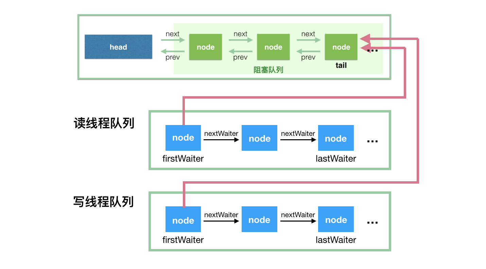

queue
队列是限制结点插入操作固定在一端进行,而结点的删除操作固定在另一端进行的线性表. 队列犹如一个两端开口的管道.允许插入的一端称为队头,允许删除的一端称为队尾.队头和队尾各用一个”指针”指示,称为队头指针和队尾指针.不含任何结点的队列称为”空队列”.队列的特点是结点在队列中的排队次序和出队次序按进队时间先后确定,即先进队者先出队.因此,队列又称先进先出表.简称FIFO(first in first out)表.
java中的queue
Java 提供的线程安全的 Queue 可以分为阻塞队列和非阻塞队列，其中阻塞队列的典型例子是 BlockingQueue，非阻塞队列的典型例子是 ConcurrentLinkedQueue，在实际应用中要根据实际需要选用阻塞队列或者非阻塞队列。 阻塞队列可以通过加锁来实现，非阻塞队列可以通过 CAS 操作实现。
ConcurrentLinkedQueue
从名字可以看出，ConcurrentLinkedQueue这个队列使用链表作为其数据结构．ConcurrentLinkedQueue 应该算是在高并发环境中性能最好的队列了。它之所有能有很好的性能，是因为其内部复杂的实现。
ConcurrentLinkedQueue 内部代码我们就不分析了，大家知道 ConcurrentLinkedQueue 主要使用 CAS 非阻塞算法来实现线程安全就好了。
AQS(AbstractQueuedSynchronizer)
类如其名，抽象的队列式的同步器，AQS定义了一套多线程访问共享资源的同步器框架，许多同步类实现都依赖于它，如常用的ReentrantLock/Semaphore/CountDownLatch...。
ArrayBlockingQueue
ArrayBlockingQueue 是 BlockingQueue 接口的有界队列实现类，底层采用数组来实现。ArrayBlockingQueue 一旦创建，容量不能改变。其并发控制采用可重入锁来控制，不管是插入操作还是读取操作，都需要获取到锁才能进行操作。当队列容量满时，尝试将元素放入队列将导致操作阻塞;尝试从一个空队列中取一个元素也会同样阻塞。
ArrayBlockingQueue 默认情况下不能保证线程访问队列的公平性，所谓公平性是指严格按照线程等待的绝对时间顺序，即最先等待的线程能够最先访问到 ArrayBlockingQueue。而非公平性则是指访问 ArrayBlockingQueue 的顺序不是遵守严格的时间顺序，有可能存在，当 ArrayBlockingQueue 可以被访问时，长时间阻塞的线程依然无法访问到 ArrayBlockingQueue。如果保证公平性，通常会降低吞吐量
ArrayBlockingQueue原理分析
ArrayBlockingQueue 共有以下几个属性：
// 用于存放元素的数组
final Object[] items;
// 下一次读取操作的位置
int takeIndex;
// 下一次写入操作的位置
int putIndex;
// 队列中的元素数量
int count;
// 以下几个就是控制并发用的同步器
final ReentrantLock lock;
private final Condition notEmpty;
private final Condition notFull;
我们用个示意图来描述其同步机制： ArrayBlockingQueue 实现并发同步的原理就是，读操作和写操作都需要获取到 AQS 独占锁才能进行操作。如果队列为空，这个时候读操作的线程进入到读线程队列排队，等待写线程写入新的元素，然后唤醒读线程队列的第一个等待线程。如果队列已满，这个时候写操作的线程进入到写线程队列排队，等待读线程将队列元素移除腾出空间，然后唤醒写线程队列的第一个等待线程

LinkedBlockingQueue
LinkedBlockingQueue 底层基于单向链表实现的阻塞队列，可以当做无界队列也可以当做有界队列来使用，同样满足 FIFO 的特性，与 ArrayBlockingQueue 相比起来具有更高的吞吐量，为了防止 LinkedBlockingQueue 容量迅速增，损耗大量内存。通常在创建 LinkedBlockingQueue 对象时，会指定其大小，如果未指定，容量等于 Integer.MAX_VALUE。